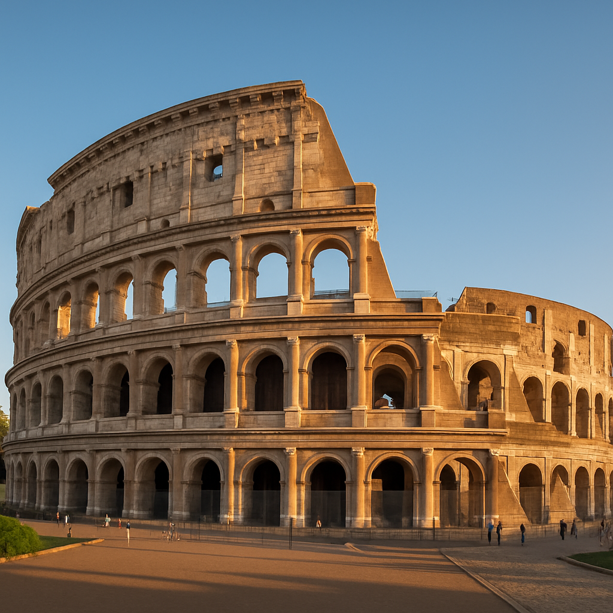

Roma é uma cidade histórica cheia de monumentos icônicos como o Coliseu, o Panteão e o Vaticano. Com uma mistura de ruínas antigas e arquitetura moderna, oferece uma experiência única de cultura, arte e gastronomia. Clique em saiba mais
Coliseu
Escadaria Espanhola
Torre de Tóquio